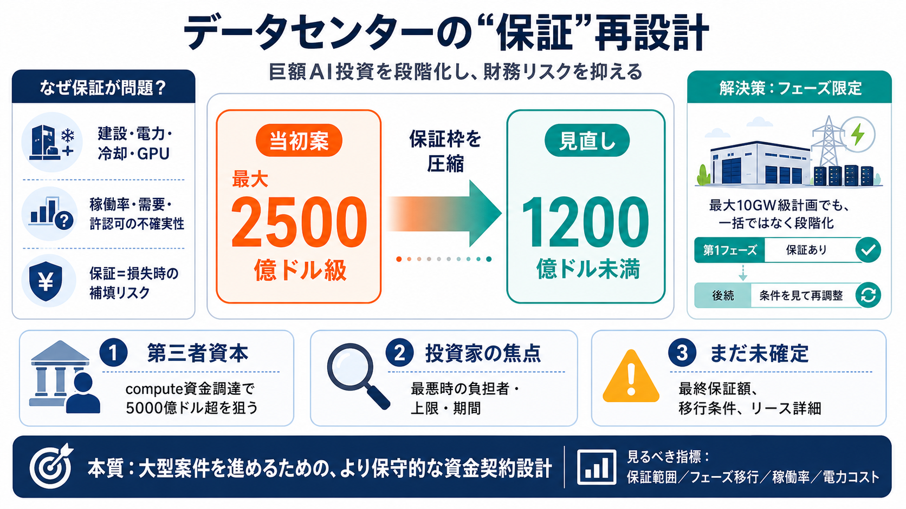

Nvidia scales back funding guarantee for Ohio OpenAI data centre: Report
Nvidia has revised its plans to support a proposed OpenAI data centre project in Ohio and is now expected to initially g…

Reuters（Wall Street Journal報道を引用）
NVIDIAがOpenAIオハイオ州データセンター支援保証を縮小（最大2500億ドル級→1200億ドル未満）、最初のフェーズ限定の可能性
AIインフラ向け「compute資金調達」関連
NVIDIAと金融機関6社の取り組み／第三者資本で5000億ドル超の目標（ご提示文の範囲）
OpenAI：オハイオ計画（SB Energy開発、最大10GW）
拘束力のあるリース条件を詰めている段階、保証・リースの確定情報不足（ご提示文の範囲）
Nvidia has revised its plans to support a proposed OpenAI data centre project in Ohio and is now expected to initially g…
Nvidia did not immediately respond to a request for comment outside regular business hours. OpenAI declined to comment…
infrastructure. OpenAI is still discussing a binding lease for the full 10-gigawatt project in Ohio, the Journal said…
The guarantees from Nvidia would help the ChatGPT maker lease a 10-gigawatt project that SoftBank’s 9434 0.49%increase; …
## DZRH News Television's Post ### DZRH News Television 1d · Nvidia has revised its plans to support a proposed Open…